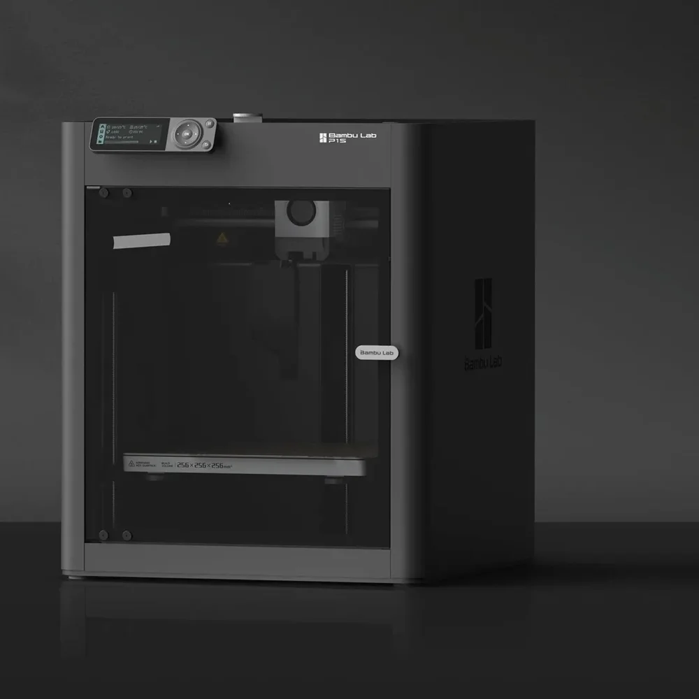

Mantenimiento preventivo para tu Bambu Lab
Tu impresora no tiene que estar descompuesta para traerla. En el mantenimiento la limpiamos, la lubricamos, la calibramos y la probamos, para que siga imprimiendo bien. Lo hacemos en nuestro taller de Av. División del Norte, en Letrán del Valle, CDMX.
¿Prefieres WhatsApp? Escríbenos al 55 7563 9255.

Lo que hacemos en el mantenimiento
Son las tareas de mantenimiento que pide Bambu Lab, hechas en orden y con la herramienta correcta. Cada modelo tiene las suyas: hacemos las que le tocan al tuyo.
Limpieza general
Interior, cama y ventiladores. Sacamos el polvo y los restos de plástico que se juntan donde no se ven.
Ejes y tornillos del eje Z
Limpiamos y lubricamos rieles, varillas y tornillos del eje Z, según lo que pida tu modelo. Con grasa, no con aceite.
Correas
Revisamos la tensión y la ajustamos si hace falta.
Extrusor y hotend
Revisamos el estado de la boquilla y de los engranes del extrusor.
Cortador y camino del filamento
Limpiamos el cortador y el recorrido del filamento, de la entrada a la boquilla.
Firmware
Lo actualizamos. Si prefieres quedarte en tu versión, dínoslo al agendar.
Calibración completa
Corremos la calibración completa de la máquina.
Impresión de prueba
Antes de entregarla, imprime una pieza de prueba.
Reporte con fotos
Te dejamos por escrito qué encontramos y qué hicimos, con fotos de cada paso.
¿Traes el AMS? Su mantenimiento cuesta $300 más, con IVA incluido. Dínoslo al agendar.
Qué cuesta, dicho de una vez
Un precio fijo por impresora. Ninguna refacción se cambia sin que tú la autorices.
Mantenimiento — $700 MXN
Precio fijo por impresora, con IVA incluido. Ya trae la revisión completa: no se cobra diagnóstico aparte.
Refacciones — solo si hacen falta
Si encontramos una pieza gastada, te mandamos la cotización por correo y tú decides. No cambiamos nada sin tu autorización.
Garantía de 90 días
90 días naturales desde que te la entregamos. Si algo de lo que ajustamos vuelve a fallar en ese plazo, lo corregimos sin costo, salvo mal uso.
¿Le toca a tu impresora?
Si te pasa alguna de estas, es buen momento.
Muchas horas de uso
Si imprime casi todos los días, el desgaste se junta aunque no lo notes.
Antes de una producción grande
Mejor encontrar una correa floja hoy que a la mitad de un pedido de cien piezas.
Más ruido o menos precisión
Un ruido nuevo, líneas en las paredes o medidas que ya no cuadran son avisos tempranos.
Cada 6 meses o 500 horas
Como referencia, lo que llegue primero.
Lo de todos los días lo puedes hacer tú. El calendario que seguimos en el taller está en Mantenimiento de tu Bambu Lab.
Se agenda en línea
Escoge día y hora en línea, o escríbenos y te damos lugar. Es rápido.
En el taller, en CDMX
- Escoge día y hora en línea
Dinos el modelo y, si lo sabes, cuántas horas tiene. También por WhatsApp al 55 7563 9255.
- ¿Traes el AMS?
Márcalo al agendar: su mantenimiento son $300 más.
- Te confirmamos por correo
Recepción de lunes a viernes de 12:00 a 18:00.
Desde otro estado
Mándala por paquetería. En Manda tu impresora por paquetería cotizas y pagas la guía en línea. En «¿Qué falla tiene?» escribe «Mantenimiento preventivo».
El envío de ida y vuelta corre por tu cuenta.
Lo que nos preguntan del mantenimiento
¿Cuánto cuesta el mantenimiento preventivo de una Bambu Lab?
$700 MXN por impresora, con IVA incluido. No se cobra diagnóstico aparte: la revisión ya va incluida. Las refacciones solo se cobran si hacen falta y si tú autorizas la cotización.
¿Cada cuánto conviene hacerlo?
Como referencia, cada 6 meses o cada 500 horas de impresión, lo que llegue primero. También antes de una producción grande, o cuando la impresora empieza a hacer más ruido o pierde precisión.
¿Qué pasa si encuentran una falla?
Te avisamos y te mandamos la cotización por correo. No cambiamos ninguna pieza sin tu autorización. Si decides no cambiarla, te entregamos la impresora con el reporte de lo que encontramos.
¿Cómo lo agendo?
En línea, en Agenda tu mantenimiento: escoges el modelo, si traes el AMS, el día y la hora. También por WhatsApp al 55 7563 9255. Si estás fuera de CDMX, mándala por paquetería y escribe «Mantenimiento preventivo» en «¿Qué falla tiene?».
¿Agendamos el mantenimiento?
Escoge día y hora en línea. Recepción de lunes a viernes de 12:00 a 18:00, en Av. División del Norte 1354, Piso 1, Letrán del Valle, Benito Juárez, CP 03650.
¿Prefieres WhatsApp? Escríbenos al 55 7563 9255.